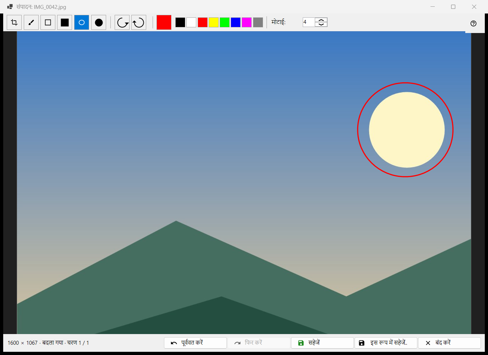
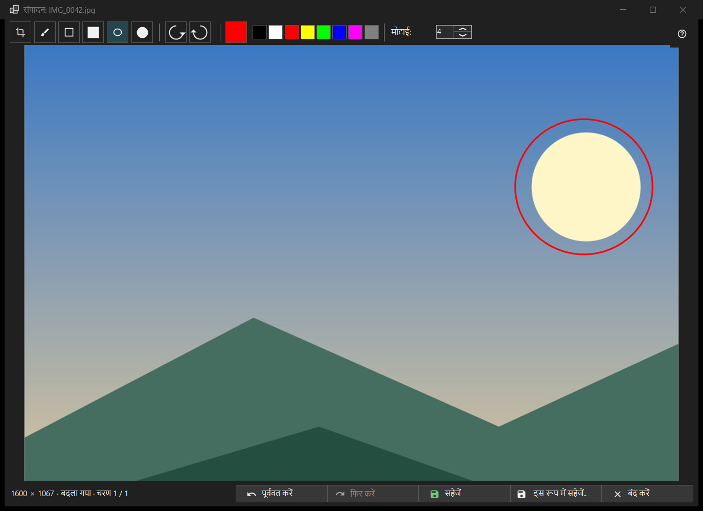

छवि संपादन
यह किस लिए है
एक स्थिर चित्र के लिए छोटा संपादक: आकृतियाँ बनाएँ, काटें, घुमाएँ और पलटें, फिर मूल फ़ाइल पर या नई फ़ाइल के रूप में सहेजें। यह टूलबार के संपादित करें बटन या चित्र मेनू के पहले आइटम से खुलता है, शीर्षक में चित्र की फ़ाइल का नाम होता है, और केवल स्थिर चित्र के लिए (एनिमेशन के लिए नहीं)। संपादक फ़ाइल को फिर से पढ़ता है और अपनी ही प्रति पर काम करता है।


इस क्रम में
- व्यूअर में संपादित करें दबाएँ।
- कोई टूल, रंग और मोटाई चुनें।
- चित्र पर बनाएँ, या काटें, घुमाएँ या पलटें; पूर्ववत करें एक कदम पीछे ले जाता है।
- मूल फ़ाइल पर लिखने के लिए सहेजें दबाएँ, या नई फ़ाइल के लिए इस रूप में सहेजें.. दबाएँ।
- विंडो बंद करें; अगर बिना सहेजे बदलाव हों तो सवाल का जवाब दें।
तत्व
टूल
पट्टी में: काट-छाँट, ब्रश, आयत, भरा आयत, अंडाकार और भरा अंडाकार। कुंजियाँ C, B, R और O हैं (भरे हुए वालों की कोई नहीं)। आयत या अंडाकार बनाते समय Shift दबाए रखें तो वर्ग या वृत्त बनता है। किसी टूल पर माउस ले जाने पर उसका नाम और कुंजी दिखती है।
रंग और मोटाई
रंग का बटन रंग संवाद खोलता है, और उसके पास आठ त्वरित रंग-नमूने हैं (काला, सफ़ेद, लाल, पीला, नींबू-हरा, नीला, मैजेंटा, स्लेटी)। मोटाई चित्र के 1 से 64 पिक्सेल तक चलती है (डिफ़ॉल्ट 4); कुंजियाँ [ और ] इसे एक-एक से बदलती हैं। रंग और मोटाई सभी टूल में साझा हैं।
काट-छाँट
काट-छाँट टूल से चित्र पर एक फ़्रेम खींचें। काट-छाँट लागू करें बटन केवल तभी दिखता है जब फ़्रेम मौजूद हो। Enter वही करता है; Esc फ़्रेम को बिना काटे हटा देता है। चित्र तभी कटता है जब आप उसे लागू करें।
घुमाना और पलटना
बाएँ घुमाएँ (Ctrl+[) और दाएँ घुमाएँ (Ctrl+]) पिक्सेल घुमाते हैं। कुंजियाँ H और V चित्र को क्षैतिज और ऊर्ध्वाधर पलटती हैं। इससे चित्र खुद बदलता है, व्यूअर के R से अलग, जो केवल प्रदर्शन घुमाता है।
पूर्ववत करें और फिर करें
पूर्ववत करें (Ctrl+Z) और फिर करें (Ctrl+Y या Ctrl+Shift+Z) मेमोरी सीमा के भीतर अधिकतम 20 चरणों का इतिहास पार करते हैं। स्टेटस बार आकार दिखाता है और बदलाव के बाद बदला गया के साथ चरण N / M; जब सीमा के कारण सबसे पुराने चरण हटते हैं तो लिखता है पुराने चरण हटा दिए गए: मेमोरी सीमा।
सहेजना
सहेजें (Ctrl+S) मूल फ़ाइल पर लिखता है और केवल बदलाव के बाद सक्षम होता है; उससे पहले उसका टूलटिप कहता है सहेजने के लिए कुछ नहीं: छवि बदली नहीं गई है। JPEG के लिए हर सत्र में एक बार पूछा जाता है: JPEG दोबारा संपीड़ित होगा - यह वापस नहीं किया जा सकता। खींचने की तिथि और बाकी EXIF डेटा बना रहता है। फ़ाइल अस्थायी नाम से लिखी जाती है और फिर बदली जाती है; सहेजना विफल हो तो विंडो कारण के साथ खुली रहती है।
इस रूप में सहेजें..
नाम में (संपादित) जोड़कर फ़ाइल संवाद खोलता है। प्रारूप PNG, JPEG, BMP, TIFF और WebP हैं; किसी और प्रारूप का चित्र PNG के रूप में प्रस्तावित होता है। संग्रह का अस्थायी फ़ोल्डर अस्वीकार किया जाता है। मूल फ़ाइल पर सहेजने के बाद व्यूअर उसे फिर लोड करता है; उसी फ़ोल्डर की नई फ़ाइल खोली जाती है; कहीं और की फ़ाइल का नाम स्टेटस बार में बताया जाता है।
जब सहेजें बंद हो
स्टेटस बार कारण के साथ मूल फ़ाइल पर नहीं लिखा जा सकता कहता है: यह प्रारूप लिखा नहीं जाता, फ़ाइल केवल पढ़ने योग्य है, लिखने की अनुमति नहीं है, कोई और प्रोग्राम फ़ाइल को रोके हुए है, फ़ाइल में कई पृष्ठ या फ़्रेम हैं (केवल पहला संपादित होता है), वह संग्रह के भीतर है, या मौजूद नहीं है। इस रूप में सहेजें.. उपलब्ध रहता है।
बंद करना
बंद करें या Esc विंडो बंद करता है; Esc पहले चल रहे स्ट्रोक को रद्द करता है, फिर काट-छाँट का फ़्रेम हटाता है। बिना सहेजे संपादन हों तो सवाल यह होता है: बदलाव सहेजे नहीं गए हैं - संपादक बंद करें और न सहेजे गए बदलाव खो दें? सहेजें पहले सहेजता है, सहेजें नहीं बदलाव छोड़ देता है, रद्द करें (डिफ़ॉल्ट, Esc भी) संपादक में रखता है। यह सवाल तब भी पूछा जाता है जब पुष्टियाँ बंद हों।